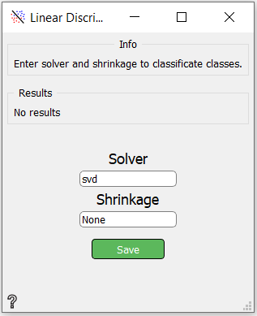

Linear Discriminant Analysis
A classifier with a linear decision boundary.
Inputs
- numpy.ndarray: Training data
- numpy.ndarray: Labels of training data
- numpy.ndarray: Target data
- numpy.ndarray: Labels of target data
Outputs If classification is binary:
- float: accuracy
- float: recall
- float: precision
If classification is multi-class:
- float: accuracy
Use

- Results - Here are displayed results:
- accuracy, recall and precision in binary classification
- accuracy in multi-class classification
- solver - Solver to use, possible values:
- svd: Singular value decomposition.
- lsqr: Least squares solution, can be combined with shrinkage.
- eigen: Eigenvalue decomposition, can be combined with shrinkage.
- shrinkage
- None: no shrinkag.
- auto: automatic shrinkage using the Ledoit-Wolf lemma.
- float between 0 and 1: fixed shrinkage parameter. Note that shrinkage works only with lsqr and eigen solvers.